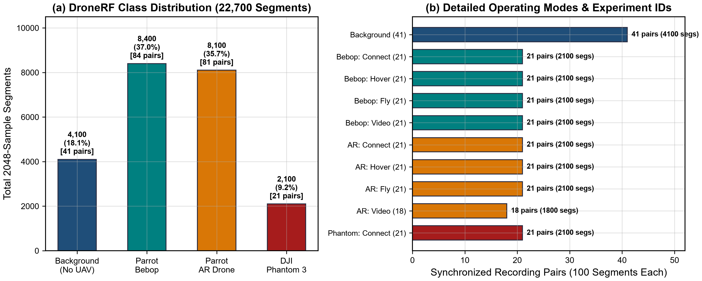

Dataset: DroneRF
1. Source and Acquisition Hardware
All RF experiments use the public DroneRF dataset released by Al-Sa’d et al. (2019) and Allahham et al. (2019) on Mendeley Data. Raw RF activity was captured by two synchronised National Instruments USRP-2943R software-defined radios, each observing one half of the 2.4 GHz ISM band used by the drones’ control and video links.
- Receivers
- 2 × NI USRP-2943R SDR, time-synchronised
- Sampling rate
- Fs = 100 MS/s, 14-bit ADC
- Total bandwidth
- 80 MHz (two 40 MHz receivers)
- Lower band (L)
- 2.40 – 2.44 GHz, centre 2.422 GHz
- Upper band (H)
- 2.44 – 2.48 GHz, centre 2.462 GHz
- Samples per file
- 10,000,000 raw amplitudes per receiver (one CSV file)
- Files
- 454 CSV files forming 227 synchronised (L, H) pairs
- Segment length used
- 2048 samples = 20.48 µs
- Local data paths
data/raw/DroneRF/(raw),data/splits/(train/val/test CSVs),data/metadata/dronerf_metadata.csv

2. Class Composition
The four-class identification task distinguishes ambient background RF from three commercial drones. Under the standard benchmark each synchronised (L, H) receiver pair yields 100 segments, giving 22,700 segments in total.
| Label | Class | Files | Pairs | Segments | Share | Notes |
|---|---|---|---|---|---|---|
| 0 | Background RF | 82 | 41 | 4,100 | 18.06% | Ambient Wi-Fi, Bluetooth and interference; no drone present |
| 1 | Parrot Bebop | 168 | 84 | 8,400 | 37.00% | Four flight modes: on/connected, hovering, flying, flying with video |
| 2 | Parrot AR Drone 2.0 | 162 | 81 | 8,100 | 35.68% | Same four flight modes |
| 3 | DJI Phantom 3 Standard | 42 | 21 | 2,100 | 9.25% | On and connected mode only |
| Total | 454 | 227 | 22,700 | 100.00% |
Label indices follow the order used by the faithful reproduction and VARDHAN-v3 benchmark scripts (Background, Bebop, AR, Phantom). Note that src/constants.py uses a different internal order (no_drone, ar_drone, bebop_drone, phantom_drone); all tables on this site name classes explicitly.
3. Binary Unique Identifier (BUI) Labelling
Each DroneRF recording is identified by a five-bit Binary Unique Identifier [b4 b3 b2 b1 b0]. The three most significant bits (msBUI) encode the drone/experiment type and the two least significant bits (lsBUI) encode the operational mode.
| msBUI | Meaning | lsBUI | Flight mode |
|---|---|---|---|
000 | Background RF (no drone) | 00 | On and connected to the controller |
100 | Parrot Bebop | 01 | Hovering |
101 | Parrot AR Drone 2.0 | 10 | Flying without video recording |
110 | DJI Phantom 3 | 11 | Flying with video recording |